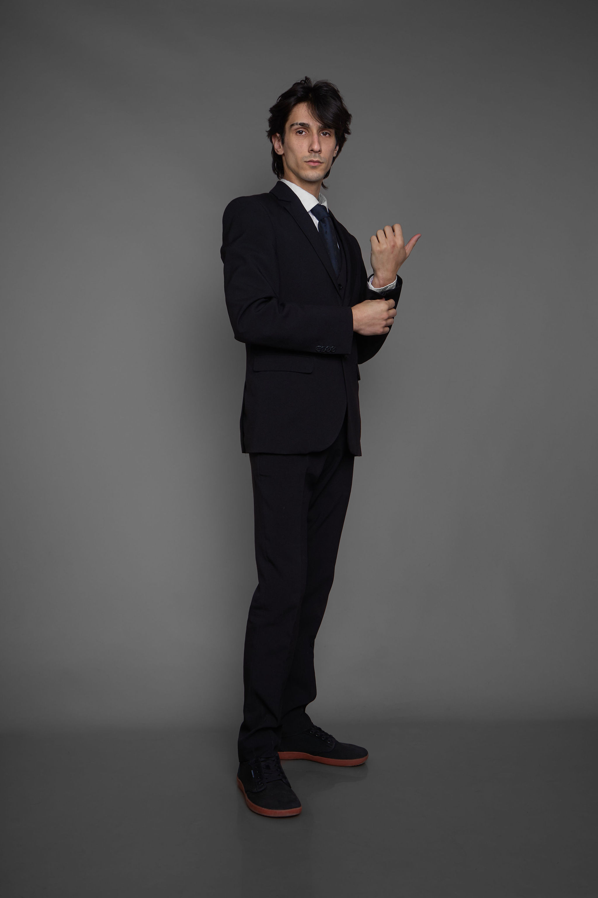

Foto de perfil - Look 2026
Sobre mí
¡Hola, Bienvenid@!
Aquí podrás encontrar todo mi material profesional,
desde mi trabajo en teatro hasta mis producciones audiovisuales.
Desde castings hasta monologos.
Mis fotos profesionales para casting, como mi look actual, mi contacto;
¡Hasta variados detrás de escenas!
Espero pronto trabajemos juntos, ¡espero tu mensaje!
Ficha Técnica
-
Edad
23 años
-
Altura
1.76
-
Cabello
Negro
-
Ojos
Marrón oscuro
-
Peso
55kg
-
Idiomas
Español e Inglés (B2)
Casting Book
Este soy yo
Neutro, el papel en blanco.
Imaginá cuantos personajes pueden vivir aquí, en este rostro.
Elegancia
Aristocracia, mozo, hijo privilegiado, intelectual, estudiante de abogacia, ¡incluso Ganster!
¿Cuantas historias caben en un traje?

Fucsia
Artista, hippie, músico, bohemio, bisexual, años 60s;
No hablamos de estereotipos, hablamos de posibilidades actorales y escénicas.
TRABAJOS
En set y escenarios
Contacto
Si deseas contactarme para proyectos, colaboraciones o cualquier consulta, no dudes en enviarme un correo electrónico a matiastorres@example.com.